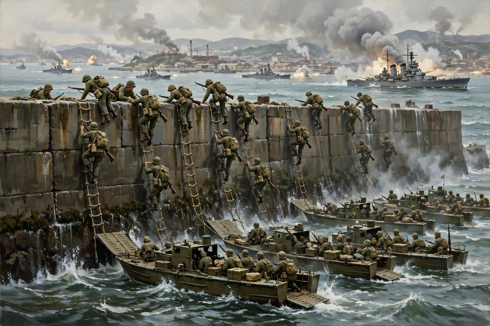

| Battle of Inchon | ||
|---|---|---|
| Part of the Korean War | ||
| Date | 10–19 September 1950 (main landings 15 September) | |
| Location | Inchon, South Korea | |
| Result | Decisive United Nations victory Recapture of Seoul; collapse of the North Korean offensive | |
| Belligerents | ||
| United Nations (United States, South Korea, United Kingdom, others) | North Korea | |
| Commanders and leaders | ||
| Douglas MacArthur, Oliver P. Smith, Edward Almond | Wol Ki-chan | |
| Strength | c. 75,000 troops, 261 ships | c. 6,500 troops in the Inchon area |
| Casualties and losses | 566 killed, 2,700+ wounded (UN, ground phase) | c. 1,350 killed; port and garrison destroyed |

The Battle of Inchon (Korean: 인천 상륙 작전), code-named Operation Chromite, was an amphibious invasion and battle of the Korean War that resulted in a decisive victory for the United Nations and a strategic reversal of fortune. Planned and championed by General Douglas MacArthur over the objections of most senior officers, the landings on 15 September 1950 cut North Korea's supply lines, relieved the Pusan Perimeter, and led within weeks to the recapture of Seoul.
After North Korea invaded the South on 25 June 1950, its army drove UN forces into a shrinking perimeter around Pusan in the southeast. MacArthur, the UN commander, conceived a bold amphibious stroke at Inchon, the port of Seoul on the west coast, far behind the North Korean lines, to seize the capital's communications hub and trap the invading army.
Inchon was an audacious — many said impossible — objective: it had one of the largest tidal ranges in the world (up to 9 metres), vast mudflats at low tide, narrow winding channels, and sea walls that landing troops would have to scale by ladder. The landing could only be attempted on a few days in September when the tide was high enough. MacArthur overruled the doubters, arguing that precisely because Inchon was so unsuitable, it would be lightly defended and its capture would be psychologically and logistically devastating.
After days of naval and air bombardment, on the morning of 15 September Marines of the 1st Marine Division seized Wolmi-do island guarding the harbour on the morning tide; the main landings followed on the evening tide at Red and Blue Beaches, with troops climbing the sea walls on ladders. Resistance was light and Inchon was secured by midnight. X Corps then advanced on Seoul, which was recaptured after bitter street fighting by 28 September, while Eighth Army broke out of the Pusan Perimeter and drove north, shattering the North Korean army.
The victory transformed the war: North Korean forces south of the 38th parallel were largely destroyed or captured, and UN forces advanced deep into North Korea — provoking Chinese intervention in late November 1950 and a new, grimmer phase of the conflict. The Inchon landing is studied as a classic of amphibious warfare and operational surprise.
Appleman, Roy E., South to the Naktong, North to the Yalu (1961); Montross & Canzona, U.S. Marine Operations in Korea, 1950–1953, vol. I.